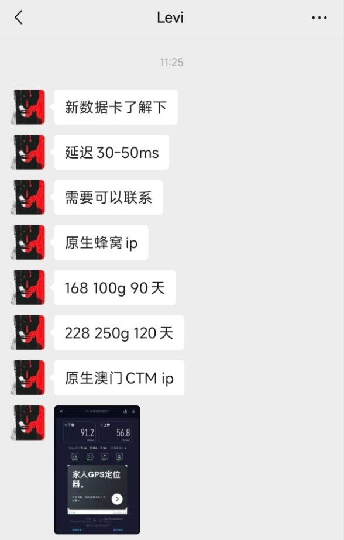
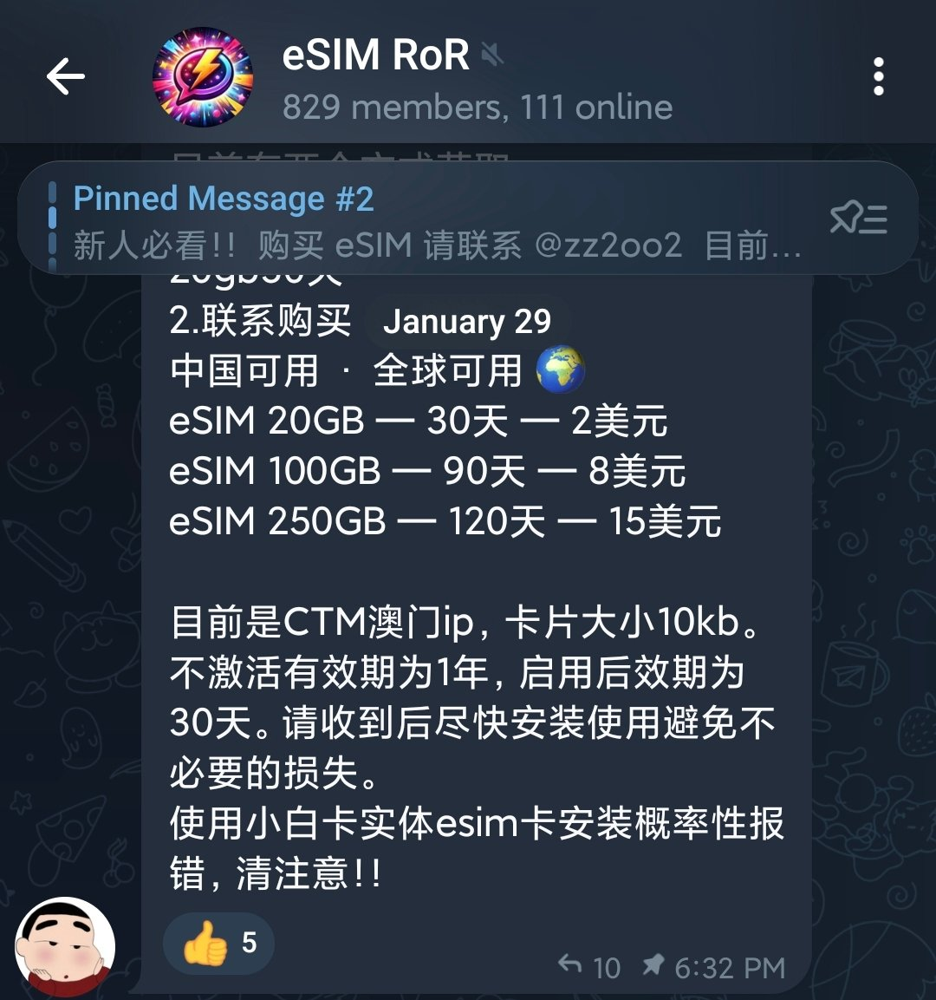
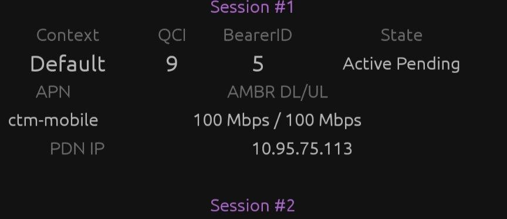

加了个卡商，看到我玩eSIM一股劲给我推CTM原生IP，大年初一在奶昔论坛也送过20G 30天的资源，好家伙竟然翻倍卖（原来这就是信息差🤯
这不是CTM（澳门电讯）请各位注意避坑！！！
盲猜是bug来的，卡是CITIC Telecom（中信数科），RSP服务器为 https://t.co/Xcdk8oenv4 与ECP小白卡（eid89086030开头）的兼容性极差，失败后二维码即报废。
最坑的是AMBR上行和下行均限速100Mbps，只有百兆速率。即使给你支持了5G SA漫游，遇到限速也无济于事，算是CTM的MVNO。
至于后续会不会封EID仍然未知，论坛上也有相关的评测帖可供参考。之前珠海移动那个68元套餐带10G港澳流量包也是CITIC（漫游资源由CTM提供，算是CTM物联卡？），且CMLink官网也有代售CITIC Telecom的eSIM资源。
这不是CTM（澳门电讯）请各位注意避坑！！！
盲猜是bug来的，卡是CITIC Telecom（中信数科），RSP服务器为 https://t.co/Xcdk8oenv4 与ECP小白卡（eid89086030开头）的兼容性极差，失败后二维码即报废。
最坑的是AMBR上行和下行均限速100Mbps，只有百兆速率。即使给你支持了5G SA漫游，遇到限速也无济于事，算是CTM的MVNO。
至于后续会不会封EID仍然未知，论坛上也有相关的评测帖可供参考。之前珠海移动那个68元套餐带10G港澳流量包也是CITIC（漫游资源由CTM提供，算是CTM物联卡？），且CMLink官网也有代售CITIC Telecom的eSIM资源。


